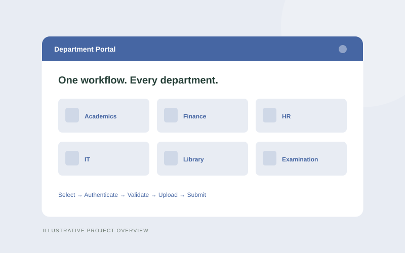

Department Portal
Adapting the AQAR collection workflow for university departments and their reporting requirements.
(Deemed University)

The purpose
The Department Portal extends the institute workflow to department-based submissions. Authorised users select their department, complete metric-specific data requirements, and submit supporting documents for quality review.
Developed Department Portal 2025 to extend the collection process to university departments, using Apps Script with Sheets and Drive.
How the work comes together.
Choose a department
Select the relevant university department from the configured list.
Authenticate
Verify the authorised department email and passcode.
Choose the metric
Select a criterion and metric, download the template, complete the required columns and upload the CSV.
Handle reporting exceptions
Use Nil when a metric applies but has no data; use Not Applicable when the metric does not apply.
Upload supporting files
Place supporting documents in the dedicated Google Drive submission folder.
Complete the review
Review the department and metric details, confirm the declarations and complete submission.
What this supports
A consistent departmental reporting structure that supports preparation of clean, validated data for NAAC submission.
See the workflow.
Illustrated demonstration with narration and English captions. Confidential records are excluded; any sample data is fictional.
Read the walkthrough transcript
Clean departmental data for NAAC submission
The Department Portal collects clean, validated data from university departments for submission to NAAC. It follows the same five-step collection approach as the institute portal, with department names as the starting point. The steps are department selection, email and passcode verification, criterion and metric selection, supporting document upload, and final review and submission.
Department selection and authentication
In step one, the user selects their department. Examples include Academics, Examination, Finance, Human Resources, IT, and the Library. In step two, the user enters the authorised email address and passcode. The displayed email and passcode are demonstration placeholders. This connects the reporting workflow to the selected department.
Metric-specific templates and CSV validation
In step three, the user selects the criterion and metric for the department’s submission. They download the predefined template, complete its required columns, and upload the CSV. As in the institute workflow, Google Apps Script defines the column structure and validation rules for the selected metric.
Clear choices when there is no data
The portal includes separate Nil and Not Applicable options. Nil means the metric is relevant to the department, but there is no data for the reporting period. Not Applicable means the metric does not apply to that department. Keeping these choices separate makes the reason for a submission without data clear.
Supporting document upload
In step four, the department uploads supporting documents for the selected metric to the submission folder in Google Drive. The portal follows the shared upload workflow: editing access is available during upload, and changes to viewing after final submission. The documents support the data supplied for review.
Final review and departmental submission
In step five, the user reviews the department details, selected metric, and submission information. They confirm the declaration checkboxes and complete final submission. This makes the departmental data and supporting documents available for quality review. Google Apps Script, Google Sheets, and Google Drive connect the collection process and help prepare clean, validated departmental information for NAAC submission.
Take a closer look.
4-page case study · PDF